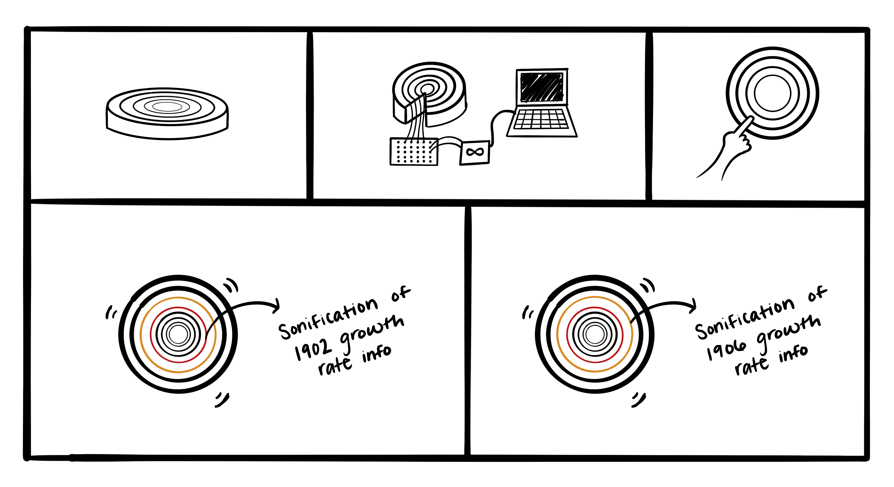
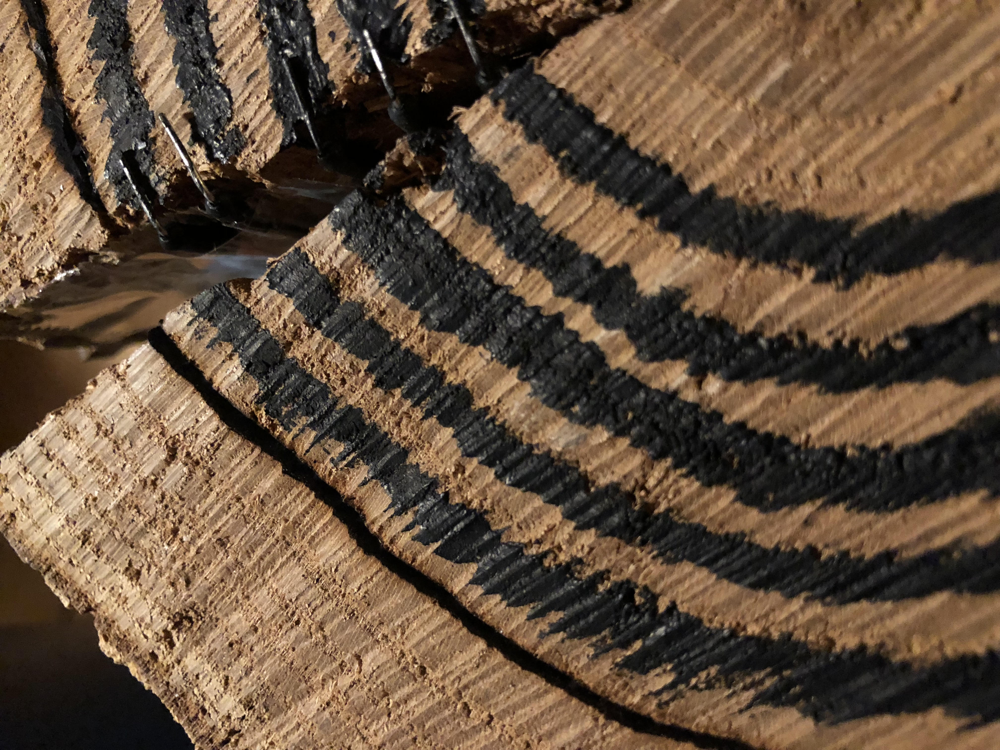
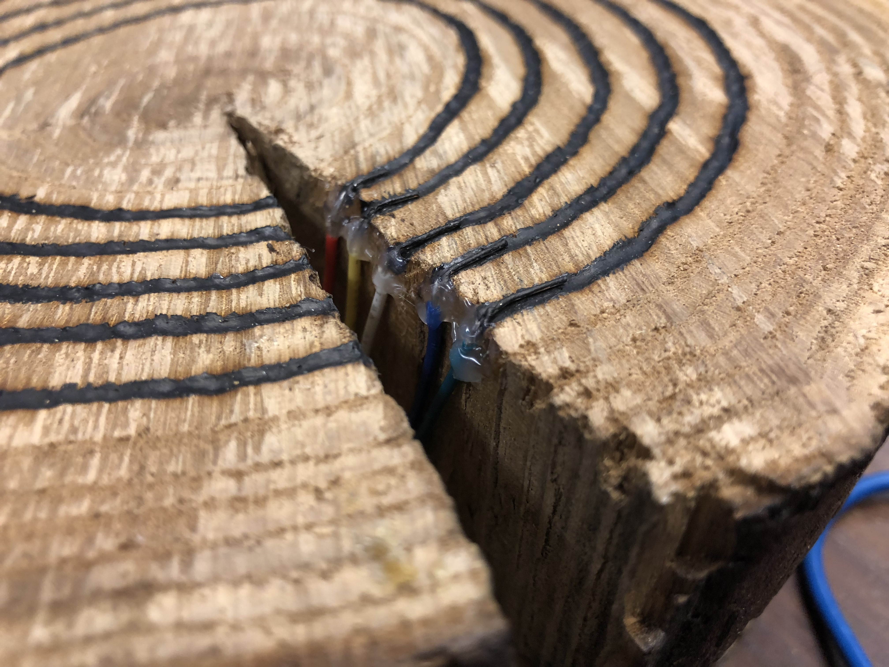
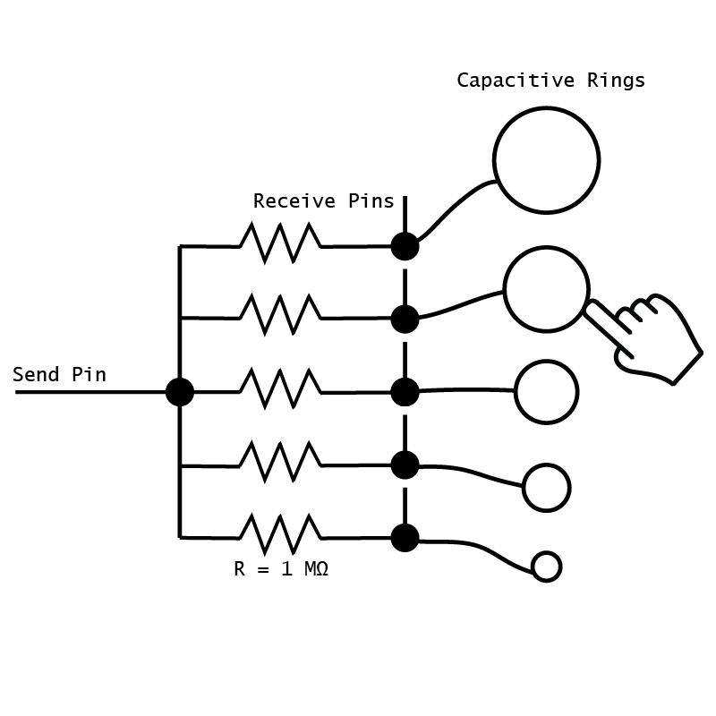
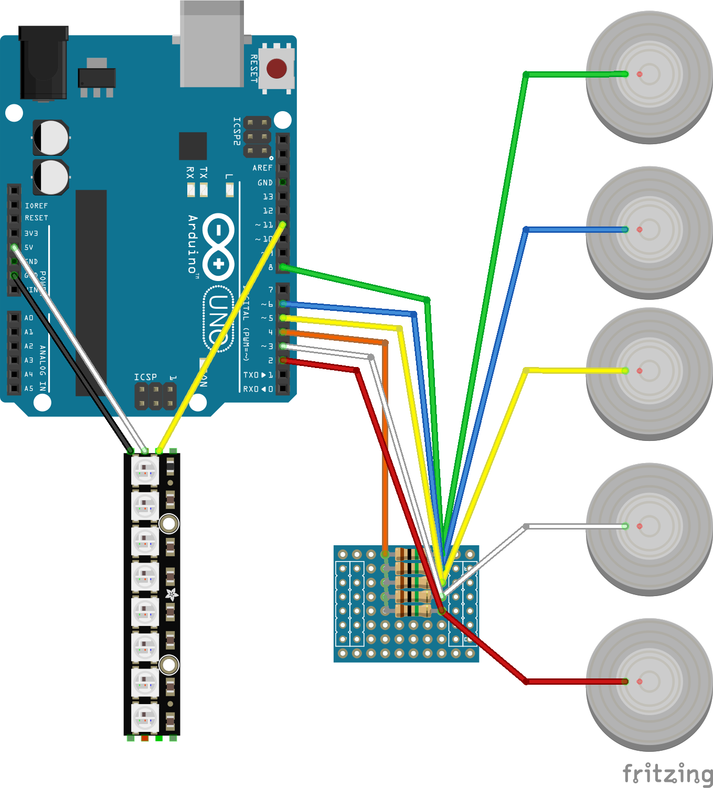
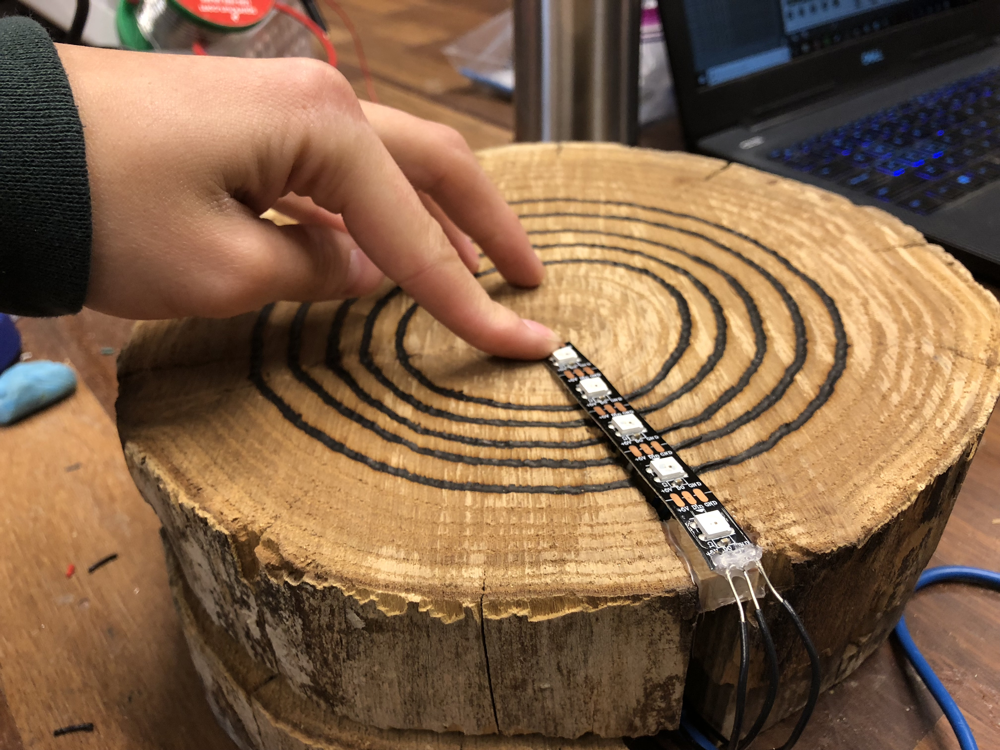
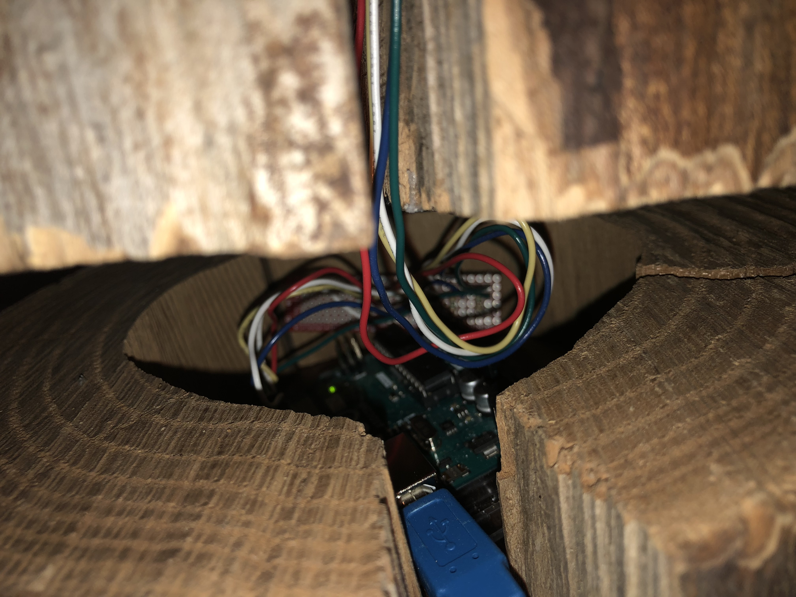
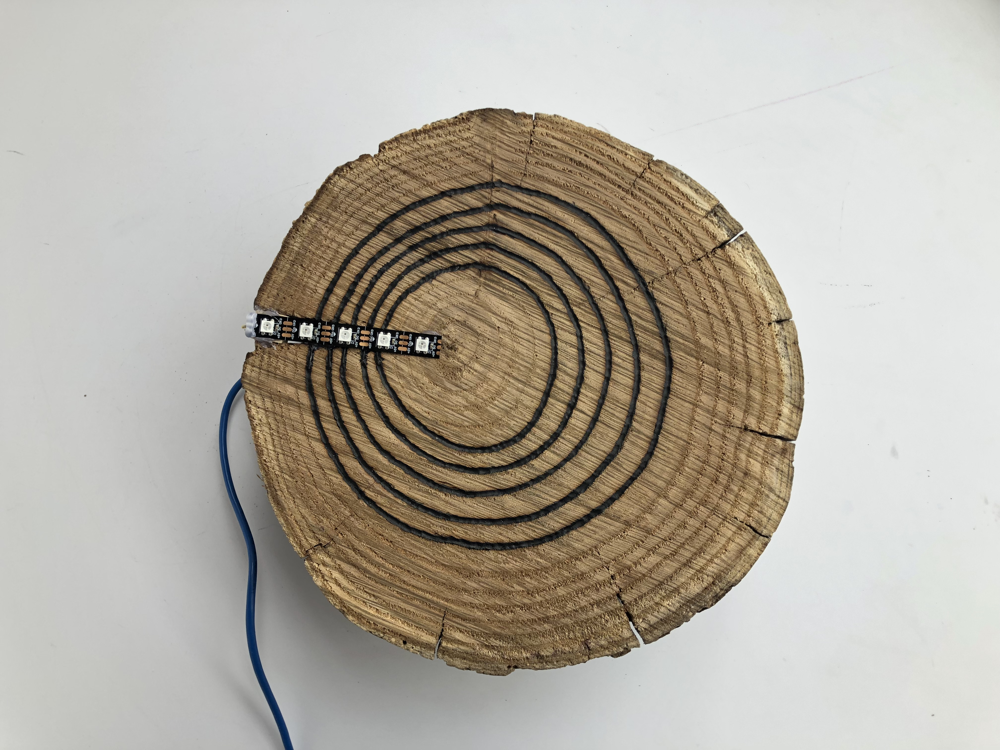
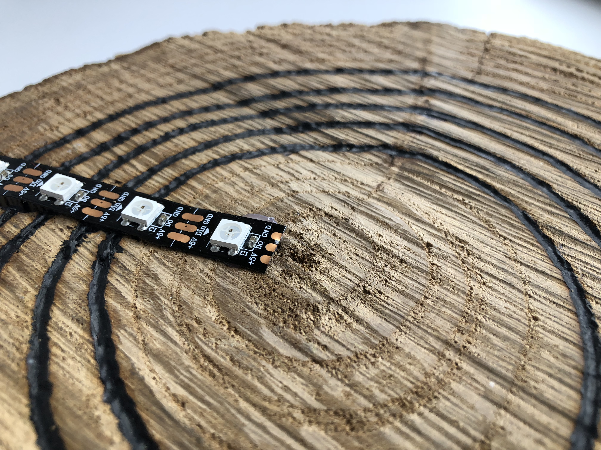

The Talking Tree is an installation which allows you to listen to the average growth rate of Ponderosa Pine trees in Colorado. The pine tree we used as the physical interface lived for seventeen years. We lined five of the stump’s seventeen tree rings with Bare Conductive conductive paint. Users then touch the rings which sends serial data to Arduino and, in return, data represented as nature and tree sounds will play back differently depending on which ring has been touched. Also attached to the Arduino is a NeoPixel strip which visually indicates which ring or rings are currently being touched.

Our project aims to sonify the average growth rate of Colorado Ponderosa Pines over a single tree’s life. We want this object to give users a new perspective on the lifespan and growth of a single tree and we want this to be a more fun and engaging way of sharing information about Ponderosa Pines.
When brainstorming for this project Alan and I considered creating our own artificial log with the laser cutter, so we would have more control over the rings’ geometry. However, we were able to obtain a small stump that we sliced into smaller pieces with a rented chainsaw from Home Depot.

We hollowed out the center of the bottom slice so that the Arduino and wiring could be concealed beneath the top slice. The two slices are attached via a dowel rod which would allow for rotation if not for the friction between the slices. In the end, the two slices fit neatly and firmly onto each other.
Before settling on conductive paint we contemplated other ways that the users could interact with the tree rings. We considered placing nails in the rings, replacing the rings with metal inlays, embedding capacitive touch sensors, using photocells. We also thought to use a nature-themed conductive stylus, such as a leaf or a twig, to detect which ring was being touched. In the end we decided to use conductive paint so users could interact by simply touching the rings on the stump with their fingers. We originally painted over the rings free hand and this method worked, however it was less pleasing to the eye.

We then used a wood burning tool to carve shallow grooves along each ring. We then filled the grooves with the conductive paint to create a cleaner look.

We created our first prototype out of a small piece of cardboard which we then painted on “tree rings”. We poked wires through the cardboard to each individual ring and used jumper cables to connect those to the Arduino. We were initially able to get the neopixel to coordinate with the rings (although out of order).

After seeing success with the prototype, we moved to the final enclosure.








The serial data collected from the user touching the tree rings is sent to a Max/MSP patch that maps the data to the corresponding Ponderosa Pine growth rate index. Each ring corresponds to a different year in the CO Ponderosa Pine growth rate data. For example, the outermost ring gives the user sounds representing 2007, when Ponderosa Pines were evidently not growing as quickly as previous years.
In Fall 2018, Alan took a course in Max/MSP in which his final project was an early prototype of this project’s final Max patch. Instead of having the tree ring interface, an XY pad made from conductive paper was the main source of user input serial data. So for this project, just over a third of the original Max patch was redone to accommodate the new tree stump interface.
Basically, the Max patch takes short snippets of longer recordings from FreeSound.org of people rustling leaves and splitting logs into firewood, and replays them at a speed which corresponds one-to-one with the Ponderosa Pines’ growth rate. For example, the snippet of leaf sounds are played at 0.55x speed if the Ponderosa Pines’ growth rate for that year was 0.55. To enhance the difference between the yearly growth rates, a peak filter is applied to the playback whose center frequency is mapped indirectly to the growth rate data. And to allow the tree’s voice to flow between gaps in the user-triggered playback, there is some feedback delay that keeps the sound going for a few seconds before the next ring is touched.
There are some user-controllable parameters for the Max patch arranged in a GUI such as sample rate, sample duration, and choice of sample—from 3 log rumbling recordings and 3 leaf rustling recordings; however, these controls are there for us to find the right voice for the tree rather than for the user to create their own tree voice. The GUI gives the user too much control and overcomplicates our intended interaction. User testing revealed strong preferences towards the leaf sounds since the user can easily recognize the differences between years due to the similarities between leaves rustling and white noise. Though, some users did enjoy the log sounds more because the creaking and snapping sounded most like what they imagine to be the voice of a tree.
Below is the final Arduino and Max/MSP code.
INSERT CODE OR EMBED GITHUB?